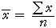

Médian
Les deux mesures les plus couramment utilisés du centre dans un ensemble de données sont à la médiane et la moyenne.
La médiane est l'une des valeurs affichées dans une boîte à moustaches, c'est la valeur moyenne d'un lot, donc le même nombre de valeurs est au-dessus et en dessous. (Si le nombre de valeurs est pair, la médiane est défini pour être à mi-chemin entre les deux valeurs du milieu.)
Moyenne
La moyenne d'un ensemble de données est obtenue en additionnant toutes les valeurs, puis en divisant par le nombre de valeurs, n.

La meilleure façon de comprendre comment se comporte la moyenne est d'imaginer chaque croix sur un dot plot unjittered d'être un objet solide reposant sur une poutre avec une masse négligeable.
| La moyenne est la valeur à laquelle le faisceau d'équilibre. |
Steel Works de données Slag
Le schéma ci-dessous montre le pourcentage restant de FeO dans les déchets de 20 lots de minerai de fer après la fusion.
Faites glisser la flèche rouge pour changer la valeur de k. Lorsque le faisceau est équilibré, k est égal à la moyenne.
Heures d'ensoleillement
Les cuisinières solaires sont potentiellement une alternative bon marché et écologique pour le bois dans le monde en développement. Dans le cadre d'une étude de leur potentiel au Botswana, les données ont été recueillies sur le nombre d'heures d'ensoleillement à Gaborone. Le schéma ci-dessous montre le total des heures d'ensoleillement le 25 Février de chaque année de 1978 à 1997.
Cet ensemble de données a une distribution biaiser avec une longue queue vers la gauche. Le point d'équilibre, et donc de la moyenne, sont fortement affectés par les deux années (1980 et 1985) quand il y avait moins de 7 heures d'ensoleillement.
Faites glisser la flèche rouge pour trouver le point d'équilibre (c'est à dire la moyenne) et d'observer que seulement 7 des 20 valeurs sont inférieures à la moyenne.
| Pour une distribution skew comme celui-ci, la moyenne est plus dans la longue queue que vous pourriez avoir attendu! |